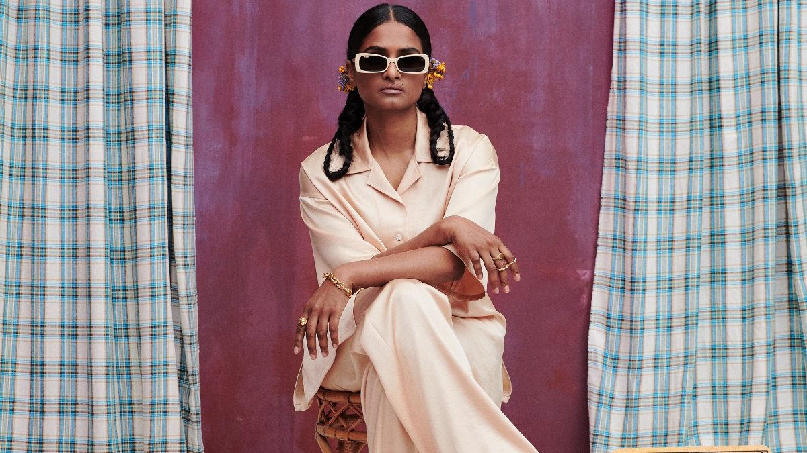
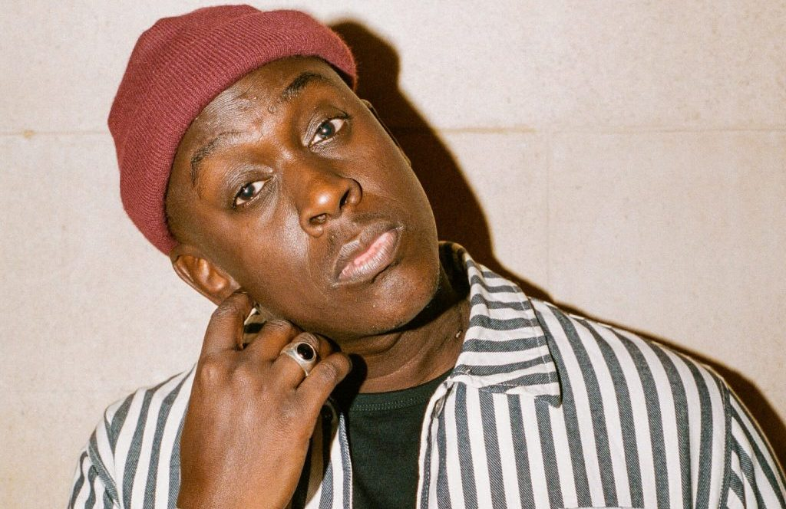
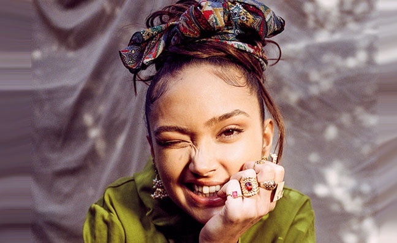
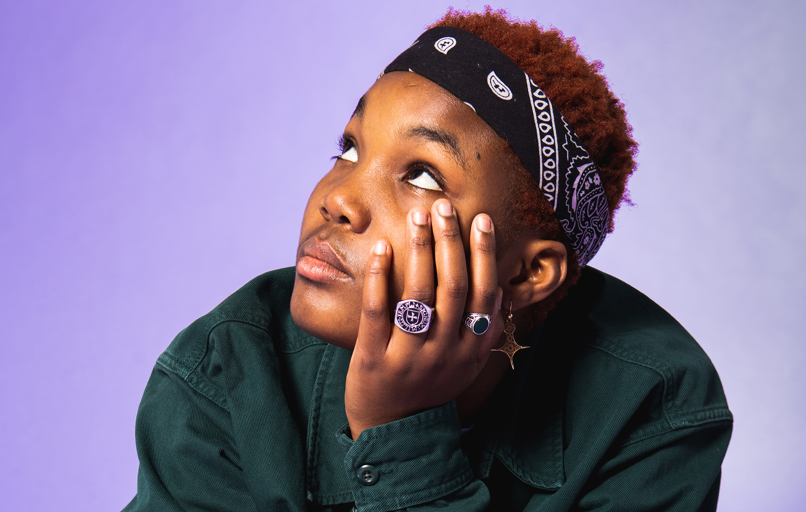

<!DOCTYPE html>
<html lang="eng"></html>
<html>
  <head>
    <meta charset="utf-8" />
    <title>Project 2: Noemi's Music Magazine</title>
    <link rel="stylesheet" href="./style.css" />
    <meta name="viewport" content="width=device-width, initial-scale=1">
    <link rel="preconnect" href="https://fonts.gstatic.com">
    <link href="https://fonts.googleapis.com/css2?family=Abril+Fatface&family=Amiri&display=swap" rel="stylesheet">
  </head>

  <body>
    <header> 
      <h1>Noemi's Music Magazine  </h1>
      <nav>
        <a href="../index.html">Home</a>
        <a>Concerts</a>
        <a>Releases</a>
        <a>About</a>
      </nav>
    </header>
    
    <section class="main-article">
      
        <div class="big-news">
          <h2>Priya Ragu</h2>
            <p class="author-main-article">by Noemi, 01.01.2021</p>
            <p class="main-article-text">
              The child of Sri Lankan parents, Ragu would sing in Tamil at family functions and made her stamp on the Zurich music scene from an early age. She just never thought her music would be heard by millions.
              Ragu’s slick production is all down to her rapper brother Japhna Gold, proving it pays to keep it in the family. Together the duo have developed a signature sound, blending raspy vocals with an electro-pop beat that often nods to their South Indian heritage.
              Debut single Good Love 2.0 is an absolute banger, guaranteed to get stuck in your head. If you haven’t already heard it played via Annie Mac on Radio 1 or on Radio 1Xtra earlier this year, you no doubt will have caught it on loop while playing FIFA 21.
              For now, Ragu is working on getting her tracks out into the world and gearing up for the day she can finally perform live. ​“I just hope that we can tour, she says. ​“We just created a band, so it would be dope if we could play live again and create memories, you know.”
              Listen to Good Love 2.0 below and get your 100% fill with Priya Ragu.</p>
        </div> 
    </section>

    <section class="artists">
      <div class="artist-cards">
        <div class="loyle">
          
          <a href="./previous_artists/loyle.html">
            <h3>Loyle Carner</h3>
              <p class="author">by Noemi, 01.01.2021</p>
              <p>Loyle Carner has shared a new song "Yesterday." The track is produced by Madlib and is the British rapper's first release since 2019 album Not Waving, But Drowning. ...</p>
          </a>
        </div>
      </div>

      <div class="artist-cards">
        <div class="barney">
          
          <a href="./previous_artists/barney.html">
            <h3>Barney Artist</h3>
              <p class="author">by Noemi, 01.01.2021</p>
              <p>Barney Artist is the laid-back, seriously woke rap maestro that demands your attention. ...</p>
          </a>          
        </div>
      </div>

      <div class="artist-cards">
        <div class="celeste"> 
          
          <a href="./previous_artists/celeste.html">
            <h3>Celeste</h3>
              <p class="author">by Noemi, 01.01.2021</p>
              <p>If British singer-songwriter Celeste isn’t already on your radar, chances are you’ll be her biggest fan by the end of the year. ...</p>
          </a>
        </div>
      </div>
        
      <div class="artist-cards">
        <div class="cleo">
          
          <a href="./previous_artists/cleo.html">
            <h3>Cleo Sol</h3>
              <p class="author">by Noemi, 01.01.2021</p>  
              <p>20 year old Cleo Sol was born to musical parents who met in a Jazz band. ...</p>
          </a>
        </div>
      </div>

      <div class="artist-cards">   
        <div class="foxwarren">
          
          <a href="./previous_artists/foxwarren.html">
            <h3>Foxwarren</h3>
              <p class="author">by Noemi, 01.01.2021</p>  
              <p>Foxwarren’s backstory reads like a page torn from the manual of rock & roll authenticity, as this group of siblings and childhood 
                friends originally formed more than a decade ago. ...</p>
          </a>
        </div>
      </div>

      <div class="artist-cards"> 
        <div class="joy">
          
          <a href="./previous_artists/joy.html">
            <h3>Joy Crookes</h3>
              <p class="author">by Noemi, 01.01.2021</p>  
              <p>Joy Crookes is 19 year old south London born songstress straddling soul, trip-hop and R&B. ...</p>
          </a>
        </div>
      </div>
        
      <div class="artist-cards">
        <div class="arlo">
          
          <a href="./previous_artists/arlo.html">
            <h3>Arlo Parks</h3>
              <p class="author">by Noemi, 01.01.2021</p>  
              <p>Arlo Parks is a 20 year old poet/singer from London. In her words she spent most of school 
                feeling like that black kid who couldn't dance for shit ...</p>
          </a>
        </div>
      </div>
    </section>
  </body>
</html>
